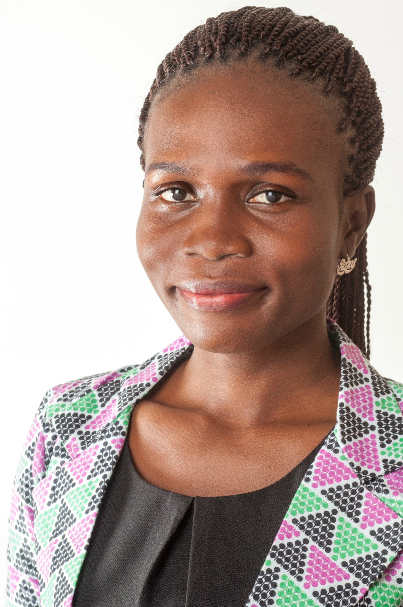

GHAIDEMS
Ghana Innovations in Development, Education and the Mathematical Sciences


About Us
GHAIDEMS is a multi-disciplinary team with long term experience working in education and development, who are looking to have a greater impact across Africa. Our origins in academia have given us an appreciation of deep understanding and knowledge, which translates into a preference for long term collaborations rather than quick fixes. Our drive for impact leads us to search for practical solutions rather than ivory tower studies. GHAIDEMS is legally registered in Ghana as a for-profit organization, however our structure and constitution defines us as a sort of social enterprise. This enables us to be defined by the communities we serve while doing business commercially. Serving a community gives us a sense of purpose beyond our own as individuals or a company.
Vision
Vision
Our vision is Impacting Grand Challenges: complex developmental issues which are resistant to simple interventions and often termed "wicked problems."
GHAIDEMS suggests the following ways to impact these challenges
1. Accepting complexity:
By adopting this approach, GHAIDEMS seeks to eliminate instant solutions and encourages the adoption of a comprehensive, transdisciplinary approach to interventions.
2. Building incrementally:
Interventions should be viewed as sequential progressions, with each step building upon prior experience and creating additional opportunities whenever feasible.
3. Explicitly coherent:
Accepting the time it takes to build solutions to such complex challenges, it is essential to have clear communications of the underlying thought process and principles to enable consistency.
Mission
GHAIDEMS works in partnership with a diverse range of collaborators to foster the growth of innovations that have the potential to improve lives worldwide.
Social Mission
GHAIDEMS being a social enterprise, is guided by a social mission that can be divided into three main components.
Development:
facilitates the growth of innovations that enhance the quality of life.


Education:
strives to positively influence the professional and academic outcomes of education systems, even in challenging environments.
Mathematical Science:
seeks to enhance the mathematical sciences as both a discipline and a means for effecting social change.


How we work
GHAIDEMS aims to achieve its high aspirations, as outlined in its vision and mission. The company's staffing principles establish shared values and responsibilities among its members, offering practical guidance for decision-making, which the company strives to always consider.
Principles guiding GHAIDEMS
The company plans to use a principled approach to guide their decision-making and navigate the complexities of daily operations. These principles are a reflection of the company's values, priorities, and methodologies, and will be continuously developed to ensure consistency in decision-making.
1. Scalable impact
This principle lies at the core of the company's vision. It challenges thinking to extend beyond mere individual solutions and delve into understanding how those solutions can be replicated and applied in a broader sense.
2. Option by Context
Incorporated into the fundamental thinking of the company, this principle emphasises the importance of considering context when proposing options or interventions. Specifically, it discourages the pursuit of singular or blanket solutions.
3. System thinking
This principle influences the company's problem-solving approach by fostering a holistic understanding of how every activity within the company aligns with and contributes to the broader context. It encourages a comprehensive perspective on the company's operations and their interconnections.
4. Inherently inclusive
Embedded within the company ethos, this principle urges the organization to eradicate all forms of discrimination. It serves as a guiding force to ensure inclusivity and equal treatment for all.
5. Informed decision making
The company embraces this principle by consciously integrating various forms of information into its decision-making processes while assessing their levels of uncertainty. Its objective is to promote a balanced evaluation of options and mitigate the risk of misinformation.
Team
We are a small team with a diverse set of skills and experiences. What draws us together is a passion for development and a strong belief in achieving impact over maximising personal gain. We are based across the world with flexible working arrangements including full and part time employees, collaborators and advisors.
Directors

Evelyn Arthur-Anto
DirectorEvelyn Arthur Anto is an MPhil graduate in Mathematics from the University of Cape Coast and a product of the African Institute for Mathematical Sciences. She excels as both a researcher and educator in Mathematics, with research interests ranging from the human genome to developing mathematical models for societal challenges.
One of such research works is developing mathematical models and algorithms for accurate gestational age predictions using ultrasound images. Additionally, her current focus is on using Mathematical models for cancer diagnosis and survival time predictions. As an educator, Evelyn engages young learners with enthusiasm, utilizing games and puzzles to make mathematics practical and accessible. Her independence and creativity further enhance her capabilities.

Francis Feehi Torgbor
DirectorFrancis Feehi Torgbor is a climate data analyst with expertise in supporting the communication of climate information to farmers through the Participatory Integrated Climate Services for Agriculture (PICSA) approach in Africa. He collaborates closely with meteorological services to ensure the generation of quality data and climate analyses relevant for PICSA. Additionally, as a founding director of the African Maths Initiative (AMI Ghana), an NGO, he is committed to promoting mathematics education and research for nationwide development, fostering a positive mathematical culture in Africa.

Nana Adjoah Mbroh
DirectorNana Adjoah Mbroh is a dedicated mathematical scientist, with a passion for computational mathematics and problem-solving. Her enthusiasm lies in contributing to research projects that enhance simulations and scientific computations. Nana's pursuit of precision and innovation motivates her to achieve optimal outcomes in her work. She takes great satisfaction in applying mathematical and computational techniques to tackle intricate developmental issues and finds joy in sharing her expertise through teaching and mentoring others.
Management Members

Carl Ayitey Ayayee-Adade
Program LeadCarl Ayitey Ayayee-Adade is a devoted mathematics tutor at the senior high school level in the Ghana Education Service (GES). With a strong background in Mathematical Sciences and Industrial Mathematics, he holds MSc. degrees from both the African Institute for Mathematical Sciences - Ghana and Kwame Nkrumah University of Science and Technology (KNUST), a Bachelor of Science in Mathematics from KNUST, and a Diploma in Basic Education (DBE) from the Ada College of Education.
Carl's research interests revolve around teaching methodologies, Mathematical optimization, and modelling. Passionately curious, versatile, and self-motivated, Carl is committed to demystifying the teaching and learning of Mathematics in Ghana, making it accessible and engaging for students.

Gifty Akoto
AccountantGifty Akoto is a seasoned accounting professional with a diverse background in the banking sector, Oil & Gas industry, and the Hospitality industry. Holding the title of Chartered Accountant, she possesses extensive expertise in Financial Reporting and Financial Statement Analysis. Presently, she serves as an Accounts Supervisor for one of the largest hotels in Africa.
John Bagiliko
OperationJohn Bagiliko is a Ph.D. Candidate at the University of Rwanda. John's areas of expertise are machine learning, data science and climatic data analysis. He is passionate about using data, statistics, data science, and machine learning to help African rainfed farmers. His current research is around improving satellite rainfall estimates in the African rainfed setting. He enjoys community building and is involved with AI Ghana as a co-founder and the president. John likes travelling, listening to music and writing.

Nicholas Opoku
OperationNicholas Opoku is a final year Bioinformatics PhD Candidate at the Kwame Nkrumah University of Science and Technology. His expertise lies in Mathematical modeling of infectious diseases and analyzing biological data, particularly genomics. He is passionate about applying rigorous mathematical and computational techniques to address real-world issues in Biology, Agriculture, and Climate change. Nicholas has been actively improving his programming skills through various online platforms and is currently working on a project focused on developing algorithms for detecting copy number variations in the human genome.

Patrick Banahene
OperationPatrick Banahene is an engineer, volunteer, and a former lecturer at Tubman University in Liberia. He has a deep passion for future climate impacts on the water, energy and food nexus. He has actively contributed to numerous environmental research initiatives and projects. His ultimate aspiration is to persistently make a positive impact by advocating for sustainable water resources management and striving to create a better world to live in.

Derrick Agorhom
InternDerrick Agorhom is a software developer and graphic designer. He has a background in Computer Science and Mathematics. His primary focus revolves around crafting innovative systems and applications that tackle real-world challenges through technology. Additionally, Derrick's enthusiasm extends to data science, where he delves into extensive datasets to derive informed insights and predictions. Derrick likes reading.
Staffing Model
GHAIDEMS staffing model strives to implement a uniform approach for all contributors, regardless of their skill level or geographic location.
Principles
The staffing model is built on the following principles:
* Individual initiative:
GHADEMS seeks to foster a culture which supports individual initiative whenever feasible. This does not only pertain to professional initiative, but also the overall environment of the workplace.
* Collective responsibility:
This includes both the collaboration on projects and a collective action to support the wellbeing of employees.
* Satisfying need not greed:
GHAIDEMS seeks to attract and retain employees who are motivated by factors beyond just financial gain.
* Respecting diversity:
GHAIDEMS endeavours to enable a diverse workforce to achieve their personal and collective potential. Both the company and its employees acknowledge the difficulties, intricacies, and obstacles that diversity can bring, and are willing to make the necessary trade-offs while acknowledging the importance of diversity.
Staff types
The staffing model is intended to apply equally across two major staff types:
Full/part time employees.
Interns.
Working Conditions
GHAIDEMS will strive to establish a flexible work environment that motivates employees to establish their own work schedule whenever feasible.
However, employees are required to be highly mindful and committed to their responsibilities, ensuring that their decisions do not disproportionately affect the company.
Our Work and Skills
GHAIDEMS’ work cuts across a wide range of areas, from agriculture and climate to education and software development. We are passionate about projects related to development, education and the mathematical sciences and particularly work that impacts more than one of these areas.
The majority of our projects are in Africa and we have a strong commitment to building capacity locally whenever we work by involving and supporting local partners whenever we can. GHAIDEMS works closely with its affiliates (IDEMS in the UK and INNODEMS in Kenya).
Social Development:
As a community interest company GHAIDEMS is set up to serve the needs of society. We are grateful that so much of our current work aligns with our social mission. The following list highlights a few projects that directly impact social development while demonstrating the range of areas we touch upon.
As we grow our social development work will always remain an important part of our portfolio.
Our projects
- Comparing satellite and station data
- R-Instat
- DocmeUP
Agriculture:
GHAIDEMS is keen on promoting food security. We have been involved in supporting the Ghana Agro-Ecology hub to promote better agroecology practices.
Our projects
- PISCA
Climate:
GHAIDEMS has always placed importance on climate as an area of contribution. The urgency of the climate emergency has drawn attention to the importance of work in this area. Our background has come from analysis of historical data, an area of significant importance in its own right. We are naturally drawn into data management and quality assurance processes pertaining to the data as well as working with satellite estimates and reanalysis products which complement and extend the data.
Our projects
- R-INSTAT Training
- Equipping National Meteorological Services for efficient use of Climatic Data (Data Rescue and Developing Climatic Products for use by PICSA and other stakeholders)
Education:
We have a background in education and many staff are passionate about mathematical science education in particular. This will always be a place of innovation and creativity for the GHAIDEMS team as we are content experts alongside our technical role. GHAIDEMS uses technology as a tool to improve educational activities across all academic levels. In Africa, we are also well placed to work directly with grassroot local implementers having an extensive network of personal contact.
Our projects
- Virtual Maths Camp
- Use of STACK in Moodle for Tertiary Education